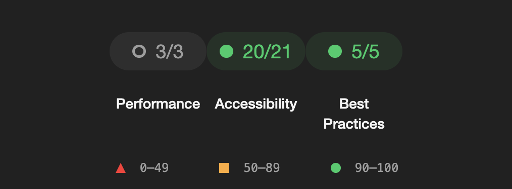

Ensuring Accessibility on Web Page
Our web page focuses on accessibility to serve all users, following central universal design principles, such as WCAG 2.1 Guidelines for accessibility regarding web content. Here are the main ways we achieve this:
How we ensure accessibility
We have used proper HTML tags to highlight the meaning, such as header, main, footer, to distuingish their role in the code. The main ways accessibility is ensured is by using simple and clear language with structured content for readability, enabling the choice of dark or light mode,using high color contrast colors for users with low vision, and providing alternativ text for images. We have used the button-attribute instead of the div-attribute for clickable elements to enable the use of external tools, such as screenreaders, without any problems. Additionaly, we have also made the interactive elements in this website easy to identify.
We have included ARIA (Accessible Rich Internet Applications), attributes such as aria-required="true" for accessibility if the required fields aren't visually obvious and for allowing error message updates in real-time. By following the WCAG 2.1 Guidelines, we ensure that our content's accessibility to users with various diabilities, for example auditory and visual impairments. In addition, our website allows keyboard accesibility, by making the interactive elements operable using the keybord. We have created clear visible indicators, such as a blue focus outline, helping the user focus on current selected elements.